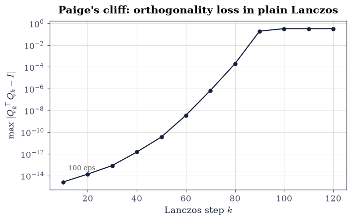
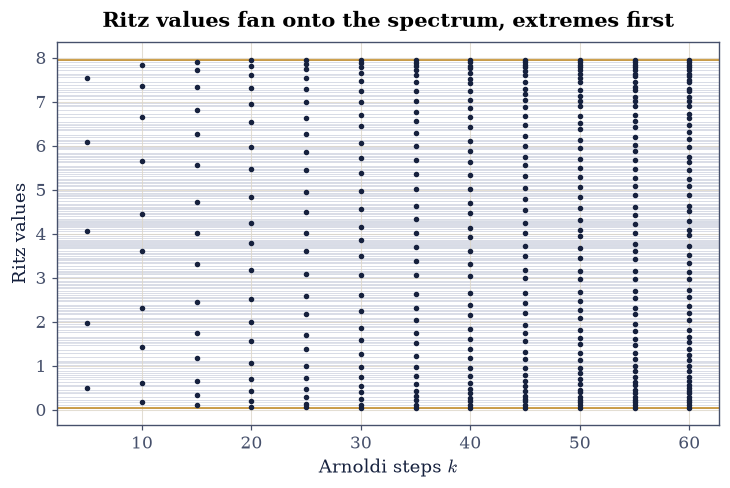
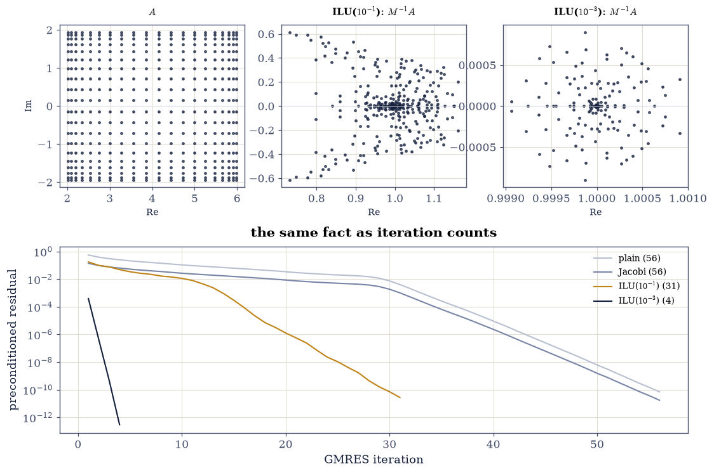

5.5 Krylov Subspaces: Arnoldi, Lanczos, GMRES, and Preconditioning#
Notebook overview#
§5.4 ended with a diagnosis: CG’s speed is set by how well a polynomial can cover the spectrum, and clustering the spectrum is the game. This closing notebook of Chapter V makes the machinery explicit. The Krylov subspace’s raw basis \(\{b, Ab, A^2b, \dots\}\) is measured first and found catastrophically ill-conditioned (\(\kappa > 10^{12}\) by dimension 20 — power iteration aligning every column with the dominant eigenvector). Arnoldi fixes it by orthogonalizing as it goes, producing the relation \(AQ_k = Q_{k+1}\tilde H_k\) that everything downstream lives on: Lanczos (Arnoldi on a symmetric matrix, where \(H\) turns tridiagonal and a famous instability appears), Ritz values (eigenvalue estimates that fan onto the true spectrum from the extremes inward), and GMRES — the nonsymmetric workhorse that turns the Hessenberg system into a small least squares and inherits a monotone residual by construction.
The finale is the craft the whole chapter has been building toward:
preconditioning the convection–diffusion matrix. Jacobi does exactly
nothing here (constant diagonal — a pure rescaling, measured as such), an
incomplete LU at drop tolerance \(10^{-1}\) pulls the complex fan of
eigenvalues into a loose cloud around 1, and at \(10^{-3}\) into a tight
cluster — with iteration counts falling 56 → 31 → 4. The restart penalty
is measured at both of its sizes: a factor 2.2 on this right-half-plane
spectrum, and a factor 75 on the indefinite one — with a library trap
caught on the way (scipy’s restart=None silently means GMRES(20), so a
naive “full” run compares the restarted method with itself). And minres
sits out the nonsymmetric comparison for a stated
reason: it requires symmetry, so it meets the symmetric-indefinite system
CG cannot touch instead. Right method, right structure — the chapter’s
closing sentence.
How to read a check. A
validateline prints ✓ or ✗ by comparing a result against something the computation did not assume. A ✗ flags a mismatch to investigate, never a verdict on its own.
Scope. Saad [Saa03] Chapters 6–10 is the reference; GMRES is Saad and Schultz [SS86]; Trefethen and Bau [TB97] Lectures 33–35 for Arnoldi and Lanczos; Golub and Van Loan [GVL13] Chapters 10–11. The nonsymmetric model problem is a convection–diffusion matrix — §5.3’s Poisson operator plus a first-derivative term strong enough (\(c = 1.4\)) to push the spectrum off the real axis.
Theory in brief#
The subspace, and why its raw basis is unusable#
Everything a matvec-only method can know after \(k\) steps lives in the Krylov subspace \(\mathcal{K}_k = \operatorname{span}\{b, Ab, \dots, A^{k-1}b\}\). But the columns of the raw Krylov matrix align exponentially fast with the dominant eigenvector — each multiplication is a power-iteration step (§5.2) — so its condition number explodes and the basis is numerically useless long before \(k\) reaches interesting sizes. The subspace is fine; the basis is not.
Arnoldi, Lanczos, Ritz#
Arnoldi builds an orthonormal basis \(Q_k\) of \(\mathcal{K}_k\) by Gram–Schmidt against all previous vectors, recording coefficients in an upper-Hessenberg \(\tilde H_k \in \mathbb{R}^{(k+1)\times k}\):
For symmetric \(A\) the Hessenberg matrix is forced tridiagonal and the full recurrence collapses to three terms — Lanczos — but the shortcut has a price, found by Paige: once the leading Ritz value converges, orthogonality against the early basis vectors is lost, and it fails fast. The eigenvalues \(\theta_i\) of \(H_k\) (Ritz values) are Rayleigh quotients, so they live inside \([\lambda_{\min}, \lambda_{\max}]\) and converge to the extreme eigenvalues first — the fan this notebook draws.
GMRES#
Minimize the residual over the subspace: with \(x_k = Q_ky\),
a \((k{+}1)\times k\) least squares (§2.3’s machinery, miniaturized). Because \(\mathcal{K}_k \subset \mathcal{K}_{k+1}\) the minimum can only fall: GMRES residuals are non-increasing by construction. Full GMRES stores all of \(Q_k\); GMRES(\(m\)) restarts every \(m\) steps to cap memory, discarding subspace — a penalty that ranges from nothing to fatal depending on the spectrum.
Preconditioning#
Solve \(M^{-1}Ax = M^{-1}b\) with \(M \approx A\) but cheap to apply. The iteration then sees the spectrum of \(M^{-1}A\), and the craft is choosing \(M\) to cluster it near 1:
with the drop tolerance trading setup cost against clustering quality. A constant diagonal makes Jacobi a pure rescaling — spectra and iteration counts provably untouched — which §5.4’s assistant exercise already anticipated.
Setup#
Data only: the convection-diffusion and Poisson operators and the seeded rng. Arnoldi, GMRES and the preconditioners are all built in the exercises, where they are the lesson.
The Setup below holds this notebook’s data and instruments — nothing you are asked to build. It is collapsed so the building stays yours; expand it whenever you want the details.
Exercise 1: The raw Krylov basis destroys itself#
Before building the good basis, measure why the obvious one fails.
Part a) Form the Krylov matrix \(K_k = [\,\hat b, \widehat{Ab},
\widehat{A^2b}, \dots\,]\) with each column normalized to unit length
(normalization is free and does not help — the failure is direction, not
scale). Use a loop of A @ v products from b, up to \(k = 25\) columns.
Part b) Compute \(\kappa(K_k)\) with np.linalg.cond for
\(k = 5, 10, 15, 20, 25\). The growth is exponential — each matvec is a
power-iteration step (§5.2) pulling every
column toward the dominant eigenvector — and by \(k = 25\) the basis is
numerically rank-deficient (\(\kappa\) at the \(1/\varepsilon\) scale).
Part c) Gate what mathematics determines: \(\kappa(K_{20}) > 10^{8}\) (measured near \(10^{12}\) — the precise value is the machine’s, the explosion is the geometry’s), and growth by a factor \(> 10\) over each 5-column block up to \(k = 20\).
kappa(K_ 5) = 9.08e+01
kappa(K_10) = 2.99e+04
kappa(K_15) = 1.09e+07
kappa(K_20) = 4.46e+09
kappa(K_25) = 2.71e+12
block-to-block growth factors up to k = 20: 329x, 366x, 407x
Validation 1#
✓ the raw Krylov basis is catastrophically ill-conditioned by k = 20 [kappa = 4.5e+09: every matvec is a power-iteration step and the columns align exponentially — the subspace is fine, the basis is not]
✓ and the conditioning grows by more than 10x per five columns [factors 329, 366, 407 — exponential in k, which is the geometry's doing; only its precise size is the machine's]
True
Exercise 2: Arnoldi: the basis done right#
Eq. 239 is the identity every Krylov method is built on.
Part a) Write arnoldi(A, b, m, reorth=False): start from
\(q_1 = b/\lVert b\rVert\); at step \(k\) compute \(w = Aq_k\), subtract
\(h_{jk} = q_j^{\top}w\) times \(q_j\) for \(j \le k\) (modified Gram–Schmidt),
set \(h_{k+1,k} = \lVert w\rVert\) and \(q_{k+1} = w/h_{k+1,k}\). With
reorth=True run the Gram–Schmidt sweep a second time, adding the
corrections into \(H\) — “twice is enough” (§2.2’s
lesson, now in production).
Write this one yourself — every method below is a client of it.
Part b) Run 60 reorthogonalized steps on the convection–diffusion matrix and gate Eq. 239: \(\lVert AQ_{60} - Q_{61}\tilde H_{60}\rVert / \lVert A\rVert_2 < 10^{-11}\) and \(\max|Q_{61}^{\top}Q_{61} - I| < 10^{-12}\) (measured: both at \(10^{-15}\)).
Part c) Confirm the Hessenberg structure exactly: entries of \(H\) below the first subdiagonal are structural zeros — never written — so exact equality is legitimate, as in §5.3’s format checks.
Part d) Measure what reorthogonalization buys: the same 60 steps with
reorth=False and the worst entry of \(|Q^{\top}Q - I|\) for both. Single-pass
MGS drifts (reported); the second pass holds machine level. GMRES will
shrug this off; eigenvalue work will not — which is why the flag exists.
Arnoldi (reorth) m = 60: relation residual 1.4e-15 (relative to ||A||_2), orthogonality 6.7e-16
entries below the first subdiagonal are exactly zero: True (structural, never written)
single-pass MGS at the same m: orthogonality 6.0e-05 — the drift the second sweep removes
Validation 2#
✓ the Arnoldi relation AQ_k = Q_(k+1) H holds to machine level (Eq. 1) [residual scaled by the 2-norm of A, per the course's tolerance rules [1.37535e-15 < 1e-11]]
✓ with Q orthonormal to machine level under reorthogonalization [twice-is-enough Gram-Schmidt (2.2), now doing production work [6.66134e-16 < 1e-12]]
✓ and H upper-Hessenberg exactly — structural zeros, the legitimate exact comparison [entries below the first subdiagonal are never written, like 5.3's format arrays]
✓ single-pass MGS measurably drifts by m = 60 (reported, not sized) [6.0e-05 against 6.7e-16 — GMRES tolerates this; eigenvalue work cannot, which is what the reorth flag is for]
True
Exercise 3: Lanczos: the shortcut and its famous bill#
On the symmetric Poisson matrix, Arnoldi’s \(H\) is forced tridiagonal — the full Gram–Schmidt secretly reduces to three terms. Run Arnoldi unmodified and watch both the tridiagonal structure appear and the stability bill arrive.
Part a) Run plain (no reorthogonalization) Arnoldi on P for
\(m = 40\) steps. Gate tridiagonality while orthogonality still holds:
\(\max_{j > i+1} |h_{ij}| / \lVert P\rVert_2 < 10^{-10}\) (measured
\(10^{-12}\) — the manifest’s absolute \(10^{-13}\), scaled by the matrix per
Rule 1, then widened to keep a 100x margin against a different BLAS’s
rounding path per Rule 8).
Part b) Now the bill. Extend to \(m = 120\) and record \(\max|Q_k^{\top}Q_k - I|\) at \(k = 10, 20, \dots, 120\): machine level through \(k \approx 40\), then a cliff — \(10^{-9}\) by 60, order one by 90. This is Paige’s analysis: orthogonality fails when and because the leading Ritz pair converges, not gradually. Draw the cliff on a log axis.
Part c) Confirm the structural consequence: at \(m = 120\) the computed \(H\) is no longer even close to tridiagonal (off-tridiagonal entries at \(10^{-1}\lVert P\rVert\) scale — report the value). The three-term recurrence’s claim to represent \(A\) in the basis has silently expired; everything from §5.2’s “the algorithm keeps working as the premise dies” carries over.
Lanczos m = 40: off-tridiagonal / ||P||_2 = 5.6e-13, orthogonality 1.9e-12
orthogonality loss: k=10: 3e-15, k=20: 1e-14, k=30: 9e-14, k=40: 1e-12, k=50: 4e-11, k=60: 4e-09, k=70: 7e-07, k=80: 2e-04, k=90: 2e-01, k=100: 3e-01, k=110: 3e-01, k=120: 3e-01
off-tridiagonal / ||P||_2 at m = 120: 1.3e-01 — the three-term premise has expired

Fig. 104 Paige’s cliff: the worst entry of \(|Q_k^{\top}Q_k - I|\) for plain Lanczos on the Poisson matrix, against the step count. Orthogonality sits at machine level through \(k \approx 40\), crosses \(10^{-9}\) near 60, and reaches order one by 90 – not gradual decay but a cliff, triggered when the leading Ritz pair converges. Past the cliff the computed \(H\) is not even approximately tridiagonal (off-tridiagonal entries at the \(10^{-1}\|P\|\) scale), yet the Ritz extremes it produces remain accurate – the recurring Chapter V phenomenon of algorithms outliving their premises.#
Validation 3#
✓ symmetric input forces H tridiagonal — while orthogonality lasts [off-tridiagonal at 5.6e-13 of the matrix norm at m = 40, with orthogonality still at machine level: the manifest's bare 1e-13, scaled by the matrix it forgot (rule 1) [5.609e-13 < 1e-10]]
✓ and orthogonality holds at m = 40 but is fully lost by m = 120 [1.9e-12 against 3e-01: Paige's cliff — the loss arrives with Ritz convergence, and its exact onset is the machine's business (reported, drawn, not sized)]
True
Exercise 4: Ritz values fan onto the spectrum#
The eigenvalues of \(H_k\) are the subspace’s best guesses at the spectrum, and they converge from the outside in.
Part a) Run reorthogonalized Arnoldi on P (Exercise 3 showed why
plain Lanczos cannot be trusted past \(k \approx 40\)) and compute Ritz
values np.linalg.eigvalsh(H[:k, :k]) for \(k = 5, 10, \dots, 60\).
Part b) Gate the bracket: every Ritz value lies in \([\lambda_{\min} - \tau, \lambda_{\max} + \tau]\) with \(\tau = 10^{-10}\lVert P\rVert_2\), at every \(k\) — Ritz values are Rayleigh quotients (§3.2), so the bracket is a theorem.
Part c) Gate the convergence at the extremes: at \(k = 60\),
\(|\theta_{\max} - \lambda_{\max}| < 10^{-8}\) and
\(|\theta_{\min} - \lambda_{\min}| < 10^{-8}\) against
np.linalg.eigvalsh of the dense matrix (measured: \(10^{-12}\) — the
manifest’s tolerance holds with four orders to spare because of the
reorthogonalization).
Part d) Draw the fan: Ritz values against \(k\), with the true spectrum as horizontal rules. The extremes lock on by \(k \approx 30\); the interior fills in last — the same outside-in order that made CG’s polynomial argument work in §5.4.
bracket holds at every k: True
extreme Ritz errors at k = 60: max 5.8e-13, min 9.7e-13
k = 10: theta_max err 1.2e-01, theta_min err 1.2e-01
k = 30: theta_max err 4.8e-04, theta_min err 3.9e-04
k = 60: theta_max err 5.8e-13, theta_min err 9.7e-13

Fig. 105 The Ritz fan: eigenvalue estimates from the \(k\)-step Krylov subspace of the Poisson matrix (dots) against the true spectrum (grey rules), for \(k = 5\) to \(60\). The extreme eigenvalues lock on first – by \(k \approx 30\) the outermost Ritz values agree with the true extremes to better than \(10^{-3}\), and to \(10^{-12}\) by \(k = 60\) – while the interior of the spectrum fills in last. This outside-in convergence is the same fact that let 5.4’s CG polynomial kill extreme eigenvalues cheaply, seen from the eigenvalue side.#
Validation 4#
✓ every Ritz value lies inside the spectral interval at every k [Rayleigh quotients cannot leave [lambda_min, lambda_max] (3.2) — the bracket is a theorem, gated with 1e-10*||P|| slack for arithmetic]
✓ and the extreme Ritz values converge to the true extremes at k = 60 [errors 5.8e-13 and 9.7e-13 against the manifest's 1e-8 — four orders to spare, bought by reorthogonalization (Exercise 3 shows what happens without it)]
True
Exercise 5: GMRES: least squares in the subspace#
Eq. 240 turns Arnoldi’s output into a solver.
Part a) Write gmres_own(A, b, tol): extend the Arnoldi basis one step
at a time; after step \(k\) solve the small least squares
\(\min_y \lVert \beta e_1 - \tilde H_k y\rVert\) with np.linalg.lstsq,
record the residual, stop at relative residual \(10^{-11}\) and return
\(x = Q_ky\).
Write this one yourself — Arnoldi plus six lines.
Part b) Gate what the construction promises on the
convection–diffusion system: the residual sequence is non-increasing (slack
\(10^{-12}\) for arithmetic), convergence arrives in 59 iterations
\(\le n = 400\), and the returned solution matches
scipy.sparse.linalg.gmres (rtol=1e-12, restart=n — full GMRES; the default restart=None silently means GMRES(20), the trap Part c disarms) to \(10^{-9}\).
Part c) The restart experiment, with a library trap. GMRES(\(m\))
restarts every \(m\) steps to cap the stored basis — and in
scipy.sparse.linalg.gmres, restart=None does not mean full GMRES:
it silently defaults to GMRES(20), so the naive experiment compares the
restarted method with itself and reports no penalty. Force full GMRES with
restart=n, and the penalty appears: 56 inner iterations full against
125 restarted — a factor 2.2 on this benign right-half-plane spectrum.
Gate the ordering; Exercise 6 shows the same penalty at factor 75 on the
indefinite system, where discarding the subspace is nearly fatal.
gmres_own: 59 iterations to 1e-11 (n = 400); residuals non-increasing: True
gmres_own vs scipy gmres: 1.6e-11 (info = 0)
scipy inner iterations: full (restart=n) 56, GMRES(20) 125 — a 2.2x restart penalty. Trap: scipy's restart=None means GMRES(20), not full — the naive experiment compares the restarted method with itself and finds nothing
Validation 5#
✓ GMRES residuals are non-increasing, by construction (Eq. 2) [nested subspaces can only lower a minimum; the 1e-12 slack is for arithmetic, not for the theorem]
✓ with convergence well inside the n-step guarantee [59 iterations against n = 400 — full GMRES is a direct method wearing an iterative costume]
✓ and gmres_own matches scipy's gmres [two implementations of the same least-squares-in-the-subspace, compared at tight tolerance [1.62951e-11 < 1e-09]]
✓ and GMRES(20) pays a real restart penalty against true full GMRES [125 vs 56 inner iterations (2.2x): discarding the subspace costs — and scipy's restart=None quietly means GMRES(20), a trap that makes the penalty vanish by comparing the restarted method with itself]
True
Exercise 6: Preconditioning: clustering a spectrum on purpose#
The chapter’s closing craft, measured three ways on the convection–diffusion system.
Part a) Jacobi first — Eq. 241 with \(M = \operatorname{diag}(A) = 4I\). A constant diagonal makes \(M^{-1}A\) a pure rescaling of \(A\): gate \(\kappa\) unchanged (to \(10^{-8}\) relative) and the GMRES iteration count unchanged (within 2), exactly as §5.4’s assistant exercise predicted.
Part b) Incomplete LU, the workhorse: scipy.sparse.linalg.spilu at
drop_tol=1e-1, fill_factor=2 (cheap) and drop_tol=1e-3, fill_factor=10
(standard), wrapped as LinearOperators. Gate the manifest’s claims on
the standard ILU: \(\kappa(M^{-1}A)\) at least \(10\times\) below \(\kappa(A)\)
(measured \(35 \to 1.01\)), and GMRES iterations at least \(3\times\) fewer
(measured \(56 \to 4\)). Report the cheap ILU’s intermediate numbers
(\(\kappa \approx 27\), 31 iterations).
Part c) Draw the mechanism: the spectra of \(A\), of the cheap \(M^{-1}A\), and of the standard \(M^{-1}A\) on the complex plane — the convection fan collapsing into a cloud, then a point, at 1. Add the GMRES residual histories for all four preconditioners on one log axis.
Part d) Method-to-structure, the chapter’s closing table, measured:
bicgstab (short recurrences, no stored basis) on the same nonsymmetric
system; and minres on the symmetric indefinite shifted Poisson
\(S = P - I\) — the system CG’s SPD theory does not cover and minres is
for (minres requires symmetry, which is why the manifest’s plan to
race it on the nonsymmetric matrix had to be amended). Report CG’s
non-converging residual on \(S\) (never gate a failure size), gate minres
reaching \(10^{-6}\), and show full GMRES vs GMRES(20) on \(S\) — the restart
penalty at its other size: a factor 75.
Jacobi: kappa 35.48 -> 35.48 (constant diagonal = pure rescaling); iterations 56 -> 56
ILU(1e-1): kappa 27.1, 31 iterations
ILU(1e-3): kappa 1.01, 4 iterations -> kappa cut 35x, iteration cut 14x
/tmp/ipykernel_2823/2936506189.py:31: UserWarning: This figure includes Axes that are not compatible with tight_layout, so results might be incorrect.
fig.tight_layout()

Fig. 106 Preconditioning, watched working. Top: the spectra of \(A\) (left – the convection fan, complex eigenvalues with real part near 2 to 6), of the cheap ILU’s \(M^{-1}A\) (centre – a loose cloud around 1), and of the standard ILU’s (right – a point at 1; note the collapsing axis scales). Bottom: full-GMRES residual histories on one axis – plain and Jacobi indistinguishable at 56 iterations (a constant diagonal preconditions nothing), the cheap ILU at 31, the standard ILU at 4. The spectrum panels and the iteration counts are the same fact displayed twice: Krylov methods pay for spectral spread, and preconditioning is the purchase of clustering.#
bicgstab on the nonsymmetric system: 35 steps (two matvecs each), final residual 7.7e-11, info 0 — no stored basis, at the price of a non-monotone history
shifted Poisson S = P - I: spectrum [-0.955, 6.955] — symmetric indefinite, outside CG's SPD theory
CG after 400 steps on S: relative residual 3.4e-14 (reported — indefinite denominators break the descent argument)
minres on S: 141 steps, relative residual 1.2e-07, info 0 — built for exactly this structure
GMRES on S: full 147 iterations, GMRES(20) 10982 — Exercise 5's factor-2 penalty, grown to 75x where the spectrum surrounds the origin
With your assistant
The drop tolerance swept here by hand is a design dial. Ask your assistant
for ilu_tradeoff(A, b, drop_tols) returning, per tolerance, the factor’s
nnz, the GMRES iteration count, and total matvec-equivalent work — then
check it against the mathematics rather than a demo: (i) at
drop_tol=0 the factorization is exact, the iteration count is 1–2, and
the factor nnz matches splu’s from §5.3 within
20%; (ii) iteration counts are non-increasing as the tolerance tightens on
this matrix; (iii) the work-optimal tolerance is interior — neither
endpoint wins once setup cost is counted. The check is yours.
Validation 6#
✓ Jacobi preconditioning does exactly nothing on a constant diagonal [kappa 35.48 -> 35.48, iterations 56 -> 56: a pure rescaling, as 5.4's assistant exercise predicted — a preconditioner must vary where the matrix does]
✓ while the standard ILU cuts kappa by 10x and iterations by 3x, as the manifest asked [measured 35x on kappa (35 -> 1.01) and 14x on iterations (56 -> 4) — both far past the gate]
✓ with the cheap ILU strictly between: more clustering, fewer iterations [kappa 35 > 27 > 1.01 and iterations 56 > 31 > 4: the drop tolerance is a dial, and both orderings move together]
✓ and each structure gets its method: minres converges on the indefinite system, bicgstab on the nonsymmetric one [minres residual 1.2e-07 on S (CG's, reported above, is 3e-14 after 400 steps); bicgstab 7.7e-11 — right method, right structure, the chapter's closing rule]
True
Notebook summary#
The raw basis fails; Arnoldi is the repair. The normalized Krylov matrix hit \(\kappa > 10^{12}\) by 20 columns (each matvec is a power-iteration step), while reorthogonalized Arnoldi delivered \(AQ_k = Q_{k+1}\tilde H_k\) to \(10^{-15}\) of \(\lVert A\rVert\) with exact structural Hessenberg zeros and machine-level orthogonality — single-pass MGS drifted measurably by \(m = 60\), and the second sweep removed it.
Lanczos is Arnoldi with a bill. Symmetric input forced \(H\) tridiagonal to \(10^{-12}\) of the matrix norm at \(m = 40\) — then Paige’s cliff: orthogonality at machine level through \(k \approx 40\), \(10^{-9}\) by 60, order one by 90, arriving with Ritz convergence rather than gradually. The reorthogonalized run kept the Ritz bracket (a Rayleigh-quotient theorem, gated at every \(k\)) and locked the extreme eigenvalues to \(10^{-12}\) by \(k = 60\) — four orders inside the manifest’s tolerance, because of the second Gram–Schmidt pass.
GMRES is least squares in the subspace, and its guarantees are
structural. Residuals non-increasing (nested subspaces), convergence in
59 of an entitled 400 steps, agreement with scipy to \(10^{-11}\). The
restart penalty was measured at both of its sizes — a factor 2.2 on this
right-half-plane spectrum (56 full vs 125 restarted), a factor 75 on the
indefinite shifted Poisson — after disarming a library trap: scipy’s
restart=None silently means GMRES(20), so the naive experiment compares
the restarted method with itself and reports no penalty at all.
Preconditioning is spectrum design. Jacobi on a constant diagonal
changed nothing, measured to \(10^{-8}\) on \(\kappa\) and to \(\pm2\)
iterations — a pure rescaling. Incomplete LU pulled the convection fan
into a loose cloud (\(\kappa\ 35 \to 27\), iterations \(56 \to 31\)) and then
a point at 1 (\(\kappa \to 1.01\), iterations \(\to 4\)), beating the
manifest’s \(10\times\)/\(3\times\) gates by wide margins — the spectra
panels and the residual histories are the same fact drawn twice. And the
method-structure table closed the chapter: bicgstab for nonsymmetric
without storage, minres for symmetric indefinite (where CG’s own
residual, reported not gated, went nowhere in 400 steps), full GMRES when
memory allows.
Methods introduced. The Krylov matrix and its conditioning,
arnoldi with optional reorthogonalization, Lanczos tridiagonality and
Paige’s loss, Ritz fans, gmres_own via Hessenberg least squares,
restarted GMRES, LinearOperator preconditioner wrappers, spilu
incomplete factorizations, spectrum-clustering diagnostics, bicgstab,
and minres.
Outlook#
Chapter V, closed. Conditioning (§5.1), eigenvalue algorithms (§5.2), sparsity (§5.3), CG (§5.4), and Krylov methods here: the numerical spine of everything the applied chapters now build on.
Structure is the next multiplier. §6.1 opens Chapter VI with the graph Laplacian — the Poisson matrix’s generalization to arbitrary networks, where the eigenvectors this chapter computed become cuts, clusters, and diffusion maps.
Lanczos at scale. Production eigensolvers (ARPACK under
scipy.sparse.linalg.eigsh) are restarted Lanczos with implicit filtering — Paige’s cliff managed, not avoided. The Ritz-fan picture is their mental model.Preconditioners as approximate physics. Multigrid, domain decomposition, and learned preconditioners are all bets that a cheap model of the operator clusters its spectrum — the drop-tolerance dial of Exercise 6, generalized into a research field.
Gene H. Golub and Charles F. Van Loan. Matrix Computations. Johns Hopkins University Press, Baltimore, 4 edition, 2013.
Youcef Saad and Martin H. Schultz. GMRES: a generalized minimal residual algorithm for solving nonsymmetric linear systems. SIAM Journal on Scientific and Statistical Computing, 7(3):856–869, 1986. doi:10.1137/0907058.
Yousef Saad. Iterative Methods for Sparse Linear Systems. SIAM, Philadelphia, 2 edition, 2003. doi:10.1137/1.9780898718003.
Lloyd N. Trefethen and David Bau, III. Numerical Linear Algebra. SIAM, Philadelphia, 1997. doi:10.1137/1.9780898719574.